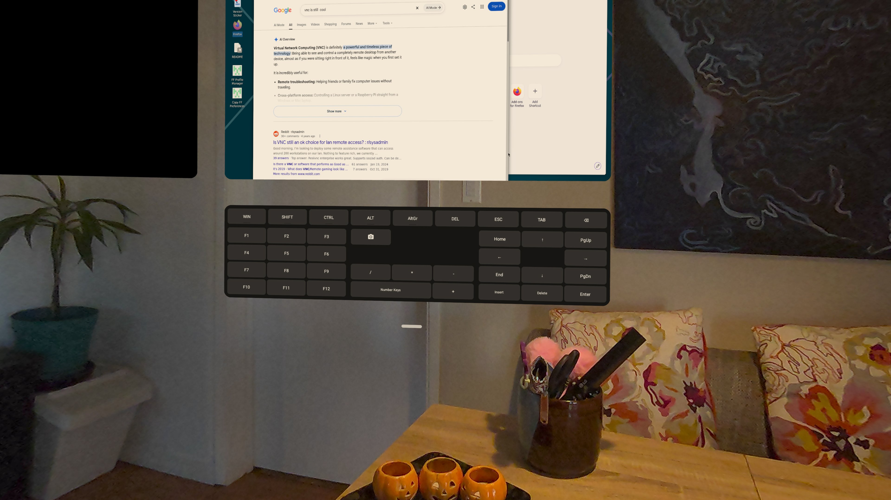
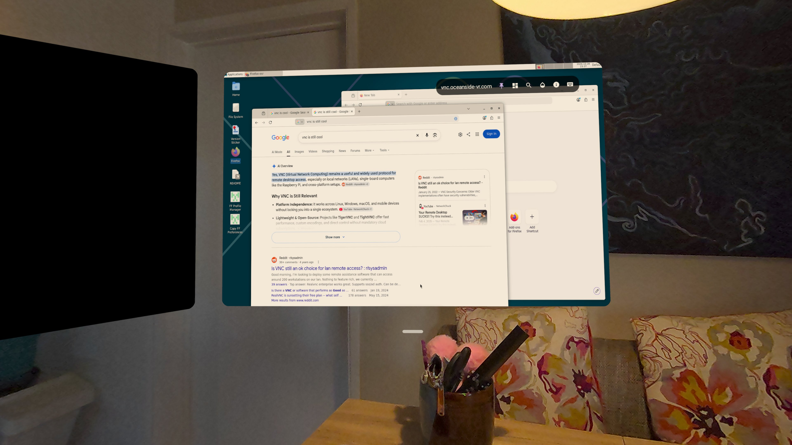

Toolbars & sessions
Every session has a floating toolbar over its window. It shows the connection name, and you can drag it anywhere in the window.
The floating toolbar
- Pin / Keep toolbar visible — otherwise the toolbar collapses. Double-tap to collapse it to an edge nub, drag the nub up or down, and tap its arrow to restore it.
- In SSH, the toolbar hides after a few seconds unless pinned.

Desktop toolbar — RDP, VNC, and Mac
In order, the desktop toolbar offers:
- Connection name (or “Desktop N – name” when an RDP host has multiple monitors)
- Pin / Keep toolbar visible
- Window Manager (when available)
- Pick up content / Cancel content move — multi-monitor RDP only
- Add desktop — multi-monitor RDP only, when the host reports more than one monitor
- Mute / Unmute speakers — RDP always; for VNC only when Apple high-performance Mac streaming is active
- Browse files — VNC only, with a paired SSH connection that has file access enabled
- Mute / Unmute microphone — only when microphone redirection is on
- Mute / Unmute camera — only when camera redirection is on
- Zoom — 1×–3× slider plus Reset Zoom; above 1× a pan pad appears
- Transparency — window opacity slider
- Connection Info — when enabled in About, shows the profile, host, protocol, decoder, transport, canvas, and scale/zoom; for VNC also Mac auth mode and Apple streaming status
- Unlock with saved password — Mac only; confirms, then sends the saved Mac password
- Keyboard toggle — opens the on-screen keyboard and extra-key panel
For VNC, camera, microphone, storage redirection, and RemoteApp are not available. Sound plays on-device only with Apple Mac streaming and Mac audio enabled.
SSH / terminal toolbar
In order, the terminal toolbar offers:
- Connection name
- Pin / Keep toolbar visible
- Window Manager (when available)
- Zoom — terminal font size, with a reset to the profile default
- Transparency — terminal opacity slider
- Browse files — once an SFTP probe over the same SSH connection succeeds
- Port forwarding — opens the forwarding dialog, saved to the profile and applied live
- Keyboard toggle — the same on-screen keyboard and extra-key panel as desktop
Keyboard
The Keyboard toggle shows the on-screen keyboard plus a fixed extra-key panel: F1–F12, Win, Shift, Ctrl, Alt, AltGr, Del, Esc, Tab, Backspace, arrows, Home/End, Page Up/Down, Insert/Delete/Enter, Print Screen, and keypad symbols.
On a confirmed Mac, Win becomes Command, Alt becomes Option, AltGr becomes Right Option, Ctrl becomes Control, and Del becomes Forward Delete.

Disconnecting
To disconnect, use the Horizon OS X button on the system control bar below the window. There is no Disconnect button in Farside's own toolbars.
If a connection drops, a Reconnect dialog offers Reconnect or Cancel, and Reconnect Automatically is saved back to the connection. If a connection fails, a Connection failed dialog offers Close.